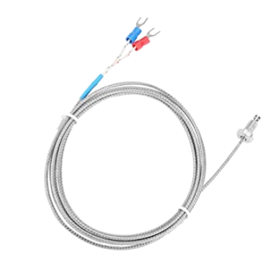
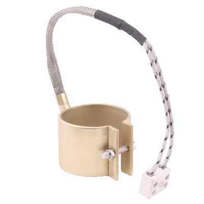
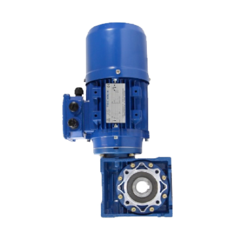
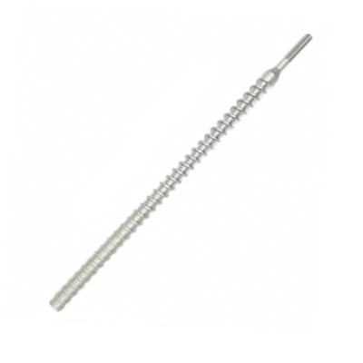
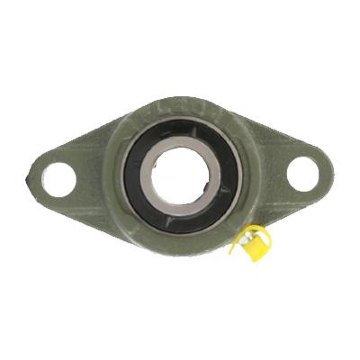

Overview of components
Overview of components (draft 1.1)
Electronics
| Component | Name | Used in | Buy | Learn more |
|---|---|---|---|---|
 | Cartridge heater Used to heat the aluminium blocks in the sheetpress | Sheetpress | online, online | forums |
 | PID controller Measures the temperature from thermocouples and uses it to turn on heating elements | Extruders, injection, sheetpress, compression | online, online | forums |
|  | Thermocouple (type K) Measures the temperature and send it to the PID | Extruders, injection, sheetpress, compression | online, online | forums |
 | 3 Phase Plug Connects the powercord with the wall socket | Extruders, Shredders, injection, sheetpress | hardware store, online | |
| Relais Uses a low output from the PID controller and Arduino to switch high current (230V) | Shredders, Extruder Pro, Sheetpress | electronic shop, online | forums | |
 | Solid state Relais Uses the low (5V) output from the PID controller to switch heating elements | Extruders, injection, sheetpress, compression | online, online | forums |
|  | Heatbands small Used the heat up the barrel | Extruder, injection | online, online | forums |
| Heatbands large Used the heat up the barrel | Extruder Pro | online, online | forums | |
| Frequency Controller Control the speed of motor | Extruder Pro, optionally extruder | online, online | forums |
Mechanics
| Component | Name | Used in | Buy | Learn more |
|---|---|---|---|---|
| Motor Shredder Powers the shredder | Extruder Pro, optionally extruder | online, online | forums | |
|  | Motor Extruder Motor that powers the extruder | Extruder Pro, optionally extruder | online, online | forums |
 | Motor Shredder Pro Big motor that powers the shredder Pro | Extruder Pro, optionally extruder | online, online | forums |
 | Motor Extruder Pro Big motor that powers the extruder Pro | Extruder Pro, optionally extruder | online, online | forums |
 | Wood auger Screw inside the extrusion barrel | Extruder Pro, optionally extruder | online, online | forums |
|  | Compression screw small Screw that can be optionally used in the extrusion to give more pressure | Extruder Pro, optionally extruder | online, online | forums |
| Compression screw large Screw used inside the barrel of the Extruder Pro | Extruder Pro, optionally extruder | online, online | forums | |
|  | Bearing small UCFL 204 bearings used to make things runs smooth | Extruder Pro, optionally extruder | online, online | forums |
 | Bearing large UCFL 209 bearings used to for heavy duty | Extruder Pro, optionally extruder | online, online | forums |